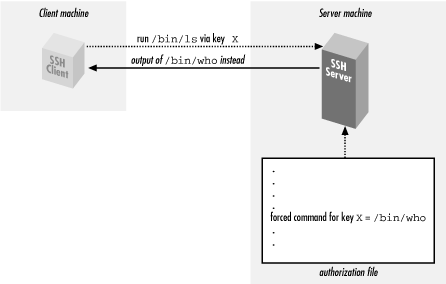

|  |
8.2. Public Key-Based Configuration
To set up public-key authentication in your account on an SSH server machine, you create an authorization file, typically called authorized_keys (SSH1, OpenSSH/1), authorized_keys2 (OpenSSH/2), or authorization (SSH2), and list the keys that provide access to your account. [Section 2.4, "Authentication by Cryptographic Key"] Well, we've been keeping a secret. Your authorization file can contain not only keys but also other keywords or options to control the SSH server in powerful ways. We will discuss:- The full format of an authorization file
- Forced commands for limiting the set of programs that the client may invoke on the server
- Restricting incoming connections from particular hosts
- Setting environment variables for remote programs
- Setting an idle timeout so clients will be forcibly disconnected if they aren't sending data
- Disabling certain features of the incoming SSH connection, such as port forwarding and tty allocation
8.2.1. SSH1 Authorization Files
Your SSH1 authorized_keys file, generally found in ~/.ssh/authorized_keys, is a secure doorway into your account via the SSH-1 protocol. Each line of the file contains a public key and means the following: "I give permission for SSH-1 clients to access my account, in a particular way, using this key as authentication." Notice the words "in a particular way." Until now, public keys have provided unlimited access to an account. Now we'll see the rest of the story. Each line of authorized_keys contains up to three items in order, some optional and some required:- A set of options (optional, surprise, surprise).
- The public key (required). This appears in three
parts: [Section 3.4.2.2, "Public-key authentication"]
- The number of bits in the key, typically a small integer such as 1024
- The exponent of the key: an integer
- The modulus of the key: a very large integer, typically several hundred digits long
- A descriptive comment (optional). This can be any text, such as "Bob's public key" or "My home PC using SecureCRT 3.1."
[114]When editing authorized_keys, be sure to use a text editor capable of handling long lines. The modulus of a key may be several hundred characters long. Some text editors can't display long lines, won't edit them properly, automatically insert line breaks, or wreak other sorts of havoc upon your nice public keys. (Aaargh. Don't get us started talking about brain-damaged text editors.) Use a modern editor, and turn off automatic line breaking. We use GNU Emacs.An option may take two forms. It may be a keyword, such as:
or it may be a keyword followed by an equals sign and a value, such as:# SSH1, OpenSSH: Turn off port forwarding no-port-forwarding
Multiple options may be given together, separated by commas, with no whitespace between the options:# SSH1, OpenSSH: Set idle timeout to five minutes idle-timeout=5m
If you mistakenly include whitespace:# SSH1, OpenSSH no-port-forwarding,idle-timeout=5m
your connection by this key won't work properly. If you connect with debugging turned on (ssh1 -v), you will see a "syntax error" message from the SSH server. Many SSH users aren't aware of options or neglect to use them. This is a pity because options provide extra security and convenience. The more you know about the clients that access your account, the more options you can use to control that access.# THIS IS ILLEGAL: whitespace between the options no-port-forwarding, idle-timeout=5m
8.2.2. SSH2 Authorization Files
An SSH2 authorization file, typically found in ~/.ssh2/authorization,[115] has a different format from its SSH1 ancestor. Instead of public keys, it contains keywords and values, much like other SSH configuration files we've seen. Each line of the file contains one keyword followed by its value. The most commonly used keywords are Key and Command.[115]The name may be changed with the keyword AuthorizationFile in the serverwide configuration file. [Section 5.4.1.6, "Per-account authorization files"] Also, the ssh2 manpage claims that AuthorizationFile can be set in the client configuration file, but as of SSH2 2.2.0 this setting has no effect. Since sshd2 doesn't read the client configuration file, this is unsurprising.Public keys are indicated using the Key keyword. Key is followed by whitespace, and then the name of a file containing a public key. Relative filenames refer to files in ~/.ssh2. For example:
means that an SSH-2 public key is contained in ~/.ssh2/myself.pub. Your authorization file must contain at least one Key line for public-key authentication to occur. Each Key line may optionally be followed immediately by a Command keyword and its value. Command specifies a forced command, i.e., a command to be executed whenever the key immediately above is used for access. We discuss forced commands later in great detail. [Section 8.2.4, "Forced Commands "] For now, all you need to know is this: a forced command begins with the keyword Command, is followed by whitespace, and ends with a shell command line. For example:# SSH2 only Key myself.pub
Remember that a Command line by itself is an error. The following examples are illegal:# SSH2 only Key somekey.pub Command "/bin/echo All logins are disabled"
# THIS IS ILLEGAL: no Key line Command "/bin/echo This line is bad." # THIS IS ILLEGAL: no Key line precedes the second Command Key somekey.pub Command "/bin/echo All logins are disabled" Command "/bin/echo This line is bad."
8.2.2.1. SSH2 PGP key authentication
SSH2 Version 2.0.13 introduced support for PGP authentication. [Section 5.5.1.6, "PGP authentication"] Your authorization file may also include PgpPublicKeyFile, PgpKeyName, PgpKey Fingerprint, and PgpKeyId lines. A Command line may follow PgpKeyName, PgpKeyFingerprint, or PgpKeyId, just as it may follow Key:# SSH2 only PgpKeyName my-key Command "/bin/echo PGP authentication was detected"
8.2.3. OpenSSH Authorization Files
For SSH-1 protocol connections, OpenSSH/1 uses the same authorized_keys file as SSH1. All configuration that's possible with SSH1 is available within OpenSSH/1. For SSH-2 connections, OpenSSH/2 takes a new approach unlike SSH2's: a new authorization file, ~/.ssh/authorized_keys2, with a format similar to that of authorized_keys. Each line may contain:- Key authorization options (optional)
- The string "ssh-dss" (required)
- The DSA public key, represented as a long string (required)
A descriptive comment (optional)
host=192.168.10.1 ssh-dss AAAAB3NzaC1kc3MA... My OpenSSH key
8.2.4. Forced Commands
Ordinarily, an SSH connection invokes a remote command chosen by the client:A forced command transfers this control from the client to the server. Instead of the client's deciding which command will run, the owner of the server account decides. In Figure 8-2, the client has requested the command /bin/ls, but the server-side forced command runs /bin/who instead.# Invoke a remote login shell $ ssh server.example.com # Invoke a remote directory listing $ ssh server.example.com /bin/ls

Figure 8-2. Forced command substituting /bin/who for /bin/ls
Forced commands can be quite useful. Suppose you want to give your assistant access to your account but only to read your email. You could associate a forced command with your assistant's SSH key to run only your email program and nothing else. In SSH1 and OpenSSH, a forced command may be specified in authorized_keys with the "command" option preceding the desired key. For example, to run the email program pine whenever your assistant connects:In SSH2, a forced command appears on the line immediately following the desired Key, using the Command keyword. The previous example would be represented:# SSH1, OpenSSH command="/usr/local/bin/pine" ...secretary's public key...
You may associate at most one forced command with a given key. To associate multiple commands with a key, put them in a script on the remote machine and run the script as the forced command. (We demonstrate this in [Section 8.2.4.3, "Displaying a command menu "].)# SSH2 only Key secretary.pub Command "/usr/local/bin/pine"
8.2.4.1. Security issues
Before we begin in-depth examples of forced commands, let's discuss security. On first glance, a forced command seems at least as secure a "normal" SSH connection that invokes a shell. This is because a shell can invoke any program, while a forced command can invoke only one program, the forced command itself. If a forced command is /usr/local/bin/pine, only /usr/local/bin/pine can be invoked. Nevertheless, there's a caveat. A forced command, carelessly used, may lull you into a sense of false security, believing that you have limited the client's capabilities when you haven't. This occurs if the forced command unintentionally permits a shell escape, i.e., a way to invoke a shell from within the forced command. Using a shell escape, a client can invoke any program available to a shell. Many Unix programs have shell escapes, such as text editors (vi, Emacs), pagers (more, less), programs that invoke pagers (man), news readers (rn), mail readers (such as Pine in the previous example!), and debuggers (adb). Interactive programs are the most common culprits, but even noninteractive commands may run shell commands ( find, xargs, etc.). When you define a forced command, you probably don't want its key used for arbitrary shell commands. Therefore, we propose the following safety rules for deciding whether a program is appropriate as a forced command:- Avoid programs that have shell escapes. Read their documentation carefully. If you still aren't sure, get help.
- Avoid compilers, interpreters, or other programs that let the user generate and run arbitrary executable code.
- Treat very carefully any program that creates or deletes files on disk in user-specified locations. This includes not only applications (word processors, graphics programs, etc.) but also command-line utilities that move or copy files (cp, mv, rm, scp, ftp, etc.).
- Avoid programs with their setuid or setgid bits set, particularly setuid root.
- If using a script as a forced command, follow traditional rules of
safe script writing. Within the script, limit the search path to
relevant directories (omitting "."), invoke all programs
by absolute path, don't blindly execute user supplied strings
as commands, and don't make the script setuid
anything.[116]
And again, don't invoke any program that has a shell escape.
[116]Modern Unix implementations often ignore the setuid bit on scripts for security reasons.
- Consider using a restricted shell to limit what the incoming client can do. For example, the restricted shell /usr/lib/rsh (not to be confused with the r-command also called "rsh") can limit the remote directories the client can enter.
- Associate the forced command with a separate, dedicated SSH key, not the one used for your logins, so you can conveniently disable the key without affecting your login capability.
- Disable unnecessary SSH features using other options we cover later. Under SSH1, you may disable port forwarding with no-port-forwarding, agent forwarding with no-agent-forwarding, and tty allocation using no-pty.
8.2.4.2. Rejecting connections with a custom message
Suppose you've permitted a friend to access your account by SSH, but now you've decided to disable the access. You can simply remove his key from your authorization file, but here's something fancier. You can define a forced command to print a custom message for your friend, indicating that his access has been disabled. For example:Any incoming SSH connection that successfully authenticates with this key causes the following message to be displayed on standard output:# SSH1, OpenSSH command="/bin/echo Sorry, buddy, but you've been terminated!" ...key... # SSH2 only Key friend.pub Command "/bin/echo Sorry, buddy, but you've been terminated!"
and then the connection closes. If you'd like to print a longer message, which might be awkward to include in your authorization file, you can store it in a separate file (say, ~/go.away) and display it using an appropriate program (e.g., cat):Sorry, buddy, but you've been terminated!
Since the message is long, you might be tempted to display it one screenful at a time with a pager program such as more or less. Don't do it!# SSH1, OpenSSH command="/bin/cat $HOME/go.away" ...key... # SSH2 only Key friend.pub Command "/bin/cat $HOME/go.away"
This forced command opens an unwanted hole into your account: the more program, like most Unix pager programs, has a shell escape. Instead of restricting access to your account, this forced command permits unlimited access.# SSH1: Don't do this! command="/bin/more $HOME/go.away" ...key...
8.2.4.3. Displaying a command menu
Suppose you want to provide limited access to your account, permitting the incoming SSH client to invoke only a few, specific programs. Forced commands can accomplish this. For instance, you can write a shell script that permits a known set of programs to be executed and then run the script as a forced command. A sample script, shown in Example 8-1, permits only three programs to be chosen from a menu.Example 8-1. Menu Script
#!/bin/sh
/bin/echo "Welcome!
Your choices are:
1 See today's date
2 See who's logged in
3 See current processes
q Quit"
/bin/echo "Your choice: \c"
read ans
while [ "$ans" != "q" ]
do
case "$ans" in
1)
/bin/date
;;
2)
/bin/who
;;
3)
/usr/ucb/w
;;
q)
/bin/echo "Goodbye"
exit 0
;;
*)
/bin/echo "Invalid choice '$ans': please try again"
;;
esac
/bin/echo "Your choice: \c"
read ans
done
exit 0The user may then type 1, 2, 3, or q to run the associated program. Any other input is ignored, so no other programs can be executed. Such scripts must be written carefully to avoid security holes. In particular, none of the permitted programs should provide a means to escape to a shell, or else the user may execute any command in your account.Welcome! Your choices are: 1 See today's date 2 See who's logged in 3 See current processes q Quit Your choice:
8.2.4.4. Examining the client's original command
As we've seen, a forced command gets substituted for any other command the SSH client might send. If an SSH client attempts to invoke the program ps :but a forced command is set up to execute "/bin/who" instead:$ ssh1 server.example.com ps
then ps is ignored and /bin/who runs instead. Nevertheless, the SSH server does read the original command string sent by the client and stores it in an environment variable. For SSH1 and OpenSSH,[117] the environment variable is SSH_ORIGINAL_COMMAND, and for SSH2, it's SSH2_ORIGINAL_COMMAND. So in the our example, the value of SSH_ORIGINAL_COMMAND would be ps.# SSH1, OpenSSH command="/bin/who" ...key...
[117]Older versions of OpenSSH didn't set SSH_ORIGINAL_COMMAND.A quick way to see these variables in action is to print their values with forced commands. For SSH1, create a forced command like the following:
Then connect with an SSH-1 client, supplying a remote command (which will not be executed), such as:# SSH1 only command="/bin/echo You tried to invoke $SSH_ORIGINAL_COMMAND" ...key...
Instead of executing cat, the SSH1 server simply prints:$ ssh1 server.example.com cat /etc/passwd
and exits. Similarly, for SSH2, you can set up a forced command like this:You tried to invoke cat /etc/passwd
and then a client command like:# SSH2 only Key mykey.pub Command "/bin/echo You tried to invoke $SSH2_ORIGINAL_COMMAND"
produces:$ ssh2 server.example.com cat /etc/passwd
You tried to invoke cat /etc/passwd
8.2.4.5. Restricting a client's original command
Let's try a slightly more complex example using the environment variable SSH_ORIGINAL_COMMAND. We will create a forced command that examines the environment variable and turns a requested command into another of our choice. For example, suppose you want to permit a friend to invoke remote commands in your account, except for the rm (remove file) command. In other words, a command such as:is rejected. Here's a script that checks for the presence of rm in the command string and, if present, rejects the command:$ ssh server.example.com rm myfile
#!/bin/sh
# SSH1 only; for SSH2, use $SSH2_ORIGINAL_COMMAND.
#
case "$SSH_ORIGINAL_COMMAND" in
*rm*)
echo "Sorry, rejected"
;;
*)
$SSH_ORIGINAL_COMMAND
;;
esacOur script is just an example: it isn't secure. It can be easily bypassed by a clever command sequence to remove a file:# SSH1 only command="$HOME/rm-checker" ...key...
which creates a link to /bin/rm with a different name (killer) and then performs the removal. Nevertheless, the concept is still valid: you can examine SSH_ORIGINAL_COMMAND to select another command to execute instead.$ ssh server.example.com '/bin/ln -s /bin/r? ./killer && ./killer myfile'
8.2.4.6. Logging a client's original command
Another cool use of the "original command" environment variables is to keep a log of commands that are run using a given key. For example:where log-and-run is the following script. It appends a line to a log file, containing a timestamp and the command attempted:# SSH1 only command="log-and-run" ...key...
#!/bin/sh if [ -n "$SSH_ORIGINAL_COMMAND" ] then echo "`/bin/date`: $SSH_ORIGINAL_COMMAND" >> $HOME/ssh-command-log exec $SSH_ORIGINAL_COMMAND fi
8.2.4.7. Forced commands and secure copy (scp)
We've seen what happens when ssh encounters a key with a forced command. But what does scp do in this situation? Does the forced command run, or does the copy operation take place? In this case, the forced command executes, and the original operation (file copy) is ignored. Depending on your needs, this behavior might be good or bad. In general, we do not recommend using scp with any key that has a forced command. Instead, use two keys, one for ordinary logins and file copying and the other for the forced command. Now that we've thoroughly examined forced commands, let's move on to other features of per-account configuration.8.2.5. Restricting Access by Host or Domain
Public-key authentication requires two pieces of information: the corresponding private key and its passphrase (if any). Without either piece, authentication can't succeed. Per-account configuration lets you add a third requirement for additional security: a restriction on the client's hostname or IP address. This is done with the from option. For example:enforces that any SSH-1 connection must come from client.example.com, or else it is rejected. Therefore, if your private key file is somehow stolen, and your passphrase cracked, an attacker might still be stymied if he can't connect from the authorized client machine. If the concept of "from" sounds familiar, you've got a good memory: it's the same access control provided by the AllowUsers keyword for serverwide configuration. [Section 5.5.2.1, "Account access control"] The authorized_keys option, however, is set by you within your account and applies to a single key, while AllowUsers is specified by the system administrator and applies to all connections to an account. Here's an example to demonstrate the difference. Suppose you want to permit connections from remote.org to enter the benjamin account. As system administrator, you can configure this within /etc/sshd_config :# SSH1, OpenSSH from="client.example.com" ...key...
Using per-account configuration, the user benjamin can configure the identical setting within his authorized_keys file, for a particular key only:# SSH1, OpenSSH AllowUsers benjamin@remote.org
Of course, the serverwide setting takes precedence. If the system administrator had denied this access using the DenyUsers keyword:# SSH1, OpenSSH # File ~benjamin/.ssh/authorized_keys from="remote.org" ...key...
then user benjamin can't override this restriction using the from option in authorized_keys. Just like AllowUsers, the from option can use the wildcard characters *, matching any string, and ?, matching any one character:# SSH1, OpenSSH DenyUsers benjamin@remote.org
from="*.someplace.org" Matches any host in the someplace.org domain
It can also match the client IP address, with or without wildcards (though this is not mentioned in the manpage):from="som?pla?e.org" Matches somXplaYe.org but not foo.someXplaYe.org or foo.somplace.org
There may also be multiple patterns, this time separated by commas (AllowUsers employs spaces). No whitespace is allowed. You may also negate a pattern by prefixing it with an exclamation point (!). The exact matching rules are: every pattern in the list is compared to either the client's canonical hostname or its IP address. If the pattern contains only numerals, dots, and wildcards, it is matched against the address, otherwise, the hostname. The connection is accepted if and only if the client matches at least one positive pattern and no negated patterns. So for example, the following rule denies connections from saruman.ring.org, allows connections from other hosts in the domain ring.org, and denies everything else:from="192.220.18.5" from="192.2??.18.*"
while this one again denies saruman.ring.org but allows all other clients:from="!saruman.ring.org,*.ring.org"
SSH1 unfortunately doesn't let you specify arbitrary IP networks using an address and mask, nor by address/number of bits. libwrap does [Section 9.4, "Forwarding Security: TCP-wrappers and libwrap"], but its restrictions apply to all connections, not on a per-key basis. Remember that access control by hostname may be problematic, due to issues with name resolution and security. [Section 3.4.2.3, "Trusted-host authentication (Rhosts and RhostsRSA)"] Fortunately, the from option is just an auxiliary feature of SSH-1 public-key authentication, which provides stronger security than would an entirely hostname-based solution.from="!saruman.ring.org,*"
8.2.5.1. Simulating "from" with SSH2
Although SSH2 doesn't support the from option, you can create your own host-based access control in SSH2 using a forced command. The trick is to examine the environment variable $SSH2_CLIENT [Section 7.4.4.1, "Selecting a remote port"] and create a script that performs the following steps:- From $SSH2_CLIENT, extract the IP address of the incoming client, which is the first value in the string.
- Accept or reject the connection based on that IP address and any logic you like.
#!/bin/sh
IP=`echo $SSH2_CLIENT | /bin/awk '{print $1}'`
case "$IP" in
24.128.97.204)
exec $SHELL
;;
128.220.85.3)
echo "Rejected"
exit 1
;;
esacThis technique works reliably only for IP addresses, not hostnames. If you trust your name service, however, you can conceivably convert the IP address found in $SSH2_CLIENT to a hostname. On Linux you can use /usr/bin/host for this purpose and, say, accept connections only from client.example.com or the domain niceguy.org:# SSH2 only Key mykey.pub Command "$HOME/ssh2from"
#!/bin/sh
IP=`echo $SSH2_CLIENT | /bin/awk '{print $1}'`
HOSTNAME=`/usr/bin/host $IP | /bin/awk '{print $5}'`
case "$HOSTNAME" in
client.example.com)
exec $SHELL
;;
*.niceguy.org)
exec $SHELL
;;
*)
echo "Rejected"
exit 1
;;
esac 8.2.6. Setting Environment Variables
The environment option instructs the SSH1 server to set an environment variable when a client connects via the given key. For example, the authorized_keys line:sets the environment variable EDITOR to the value emacs, thereby setting the client's default editor for the login session. The syntax following environment= is a quoted string containing a variable, an equals sign, and a value. All characters between the quotes are significant, i.e., the value may contain whitespace:# SSH1, OpenSSH environment="EDITOR=emacs" ...key...
or even a double quote, if you escape it with a forward slash:# SSH1, OpenSSH environment="MYVARIABLE=this value has whitespace in it" ...key...
Also, a single line in authorized_keys may have multiple environment variables set:# SSH1, OpenSSH environment="MYVARIABLE=I have a quote\" in my middle" ...key...
Why set an environment variable for a key? This feature lets you tailor your account to respond differently based on which key is used. For example, suppose you create two keys, each of which sets a different value for an environment variable, say, SPECIAL:# SSH1, OpenSSH environment="EDITOR=emacs",environment="MYVARIABLE=26" ...key...
Now, in your account's shell configuration file, you can examine $SPECIAL and trigger actions specific to each key:# SSH1, OpenSSH environment="SPECIAL=1" ...key... environment="SPECIAL=2" ...key...
# In your .login file
switch ($SPECIAL)
case 1:
echo 'Hello Bob!'
set prompt = 'bob> '
breaksw
case 2:
echo 'Hello Jane!'
set prompt = jane> '
source ~/.janerc
breaksw
endsw8.2.6.1. Example: CVS and $LOGNAME
As a more advanced example of the environment option, suppose a team of open source software developers around the Internet is developing a computer program. The team decides to practice good software engineering and store its code with CVS, the Concurrent Versions System version control tool. Lacking the funds to set up a server machine, the team places the CVS repository into the computer account of one of the team members, benjamin, since he has lots of available disk space. Benjamin's account is on the SSH server machine cvs.repo.com. The other developers don't have accounts on cvs.repo.com, so benjamin places their public keys into his authorized_keys file so they can do check-ins. Now there's a problem. When a developer changes a file and checks the new version into the repository, a log entry is made by CVS, identifying the author of the change. But everyone is connecting through the benjamin account, so CVS always identifies the author as "benjamin," no matter who checked in the changes. This is bad from a software engineering standpoint: the author of each change should be clearly identified.[118][118]In an industrial setting, each developer would have an account on the CVS repository machine, so the problem would not exist.You can eliminate this problem by modifying benjamin's file, preceding each developer's key with an environment option. CVS examines the LOGNAME environment variable to get the author's name, so you set LOGNAME differently for each developer's key:
Now, when a given key is used for a CVS check-in, CVS identifies the author of the change by the associated, unique LOGNAME value. Problem solved![119]# SSH1, OpenSSH environment="LOGNAME=dan" ...key... environment="LOGNAME=richard" ...key... ...
[119]Incidentally, the authors used this technique while collaborating on this book.
8.2.7. Setting Idle Timeout
The idle-timeout option tells the SSH1 server to disconnect a session that has been idle for a certain time limit. This is just like the IdleTimeout keyword for serverwide configuration but is set by you within your account, instead of by the system administrator. [Section 5.4.3.3, "Idle connections"] Suppose you let your friend Jamie access your account by SSH-1. Jamie works in an untrusted environment, however, and you are worried that he might walk away from his computer while connected to your account, and someone else might come by and use his session. One way to reduce the risk is to set an idle timeout on Jamie's key, automatically disconnecting the SSH-1 session after a given period of idle time. If the client stops sending output for a while, Jamie has probably walked away, and the session is terminated. Timeouts are set in with the idle-timeout option. For example, to set the idle timeout to 60 seconds:idle-timeout uses the same notation for time as the IdleTimeout keyword: an integer, optionally followed by a letter indicating the units. For example, 60s is 60 seconds, 15m is fifteen minutes, 2h is two hours, and so forth. If no letter appears, the default unit is seconds. The idle-timeout option overrides any serverwide value set with the Idle Timeout keyword. For example, if the serverwide idle timeout is five minutes:# SSH1, OpenSSH idle-timeout=60s ...key...
but your file sets it to 10 minutes for your account:# SSH1, OpenSSH IdleTimeout 5m
then any connection using this key has an idle timeout of 10 minutes, regardless of the serverwide setting. This feature has more uses than disconnecting absent typists. Suppose you're using an SSH-1 key for an automated process, such as backups. An idle timeout value kills the process automatically if it hangs due to an error.# SSH1, OpenSSH idle-timeout=10m ...key...
8.2.8. Disabling Forwarding
Although you're permitting SSH-1 access to your account, you might not want your account to be used as a springboard to other machines by port forwarding. [Section 9.2, "Port Forwarding"] To prevent this, use the no-port-forwarding option for that key:Likewise, you can disable agent forwarding if you don't want remote users to travel through your account and onto other computers using the given key. [Section 6.3.5, "Agent Forwarding"] This is done with the no-agent-forwarding option:# SSH1, OpenSSH no-port-forwarding ...key...
# SSH1, OpenSSH no-agent-forwarding ...key...
WARNING: These aren't strong restrictions. As long as you allow shell access, just about anything can be done over the connection. The user need employ only a pair of custom programs that talk to each other across the connection and directly implement port forwarding, agent forwarding, or anything else you thought you were preventing. To be more than just a reminder or mild deterrent, these options must be used together with carefully restricted access on the server side, such as forced commands or a restricted shell on the target account.
8.2.9. Disabling TTY Allocation
Normally when you log in via SSH-1, the server allocates a pseudo-terminal (henceforth, tty) for the login session: [Section 7.4.5.5, "Pseudo-terminal allocation (TTY/PTY/PTTY)"]The server even sets an environment variable, SSH_TTY, with the name of the tty allocated. For example:# A tty is allocated for this client $ ssh1 server.example.com
When you run a noninteractive command, however, the SSH server doesn't allocate a tty to set SSH_TTY:# After logging in via SSH-1 $ echo $SSH_TTY /dev/pts/1
Suppose you want to give someone SSH-1 access for invoking noninteractive commands but not for running an interactive login session. You've seen how forced commands can limit access to a particular program, but as an added safety precaution, you can also disable tty allocation with the no-pty option:# No tty is allocated $ ssh1 server.example.com /bin/ls
Noninteractive commands will now work normally, but requests for interactive sessions are refused by the SSH1 server. If you try to establish an interactive session, your client prints a warning message, such as:# SSH1, OpenSSH no-pty ...key...
or it appears to hang or fail altogether. Just for fun, let's observe the effect of no-pty on the SSH_TTY environment variable with a simple experiment. Set up a public key and precede it with the following forced command:Warning: Remote host failed or refused to allocate a pseudo-tty. SSH_SMSG_FAILURE: invalid SSH state
Now try connecting noninteractively and interactively, and watch the output. The interactive command gives SSH_TTY a value, but the noninteractive one doesn't:# SSH1, OpenSSH command="echo SSH_TTY is [$SSH_TTY]" ...key...
Next, add the no-pty option:$ ssh1 server.example.com SSH_TTY is [/dev/pts/2] $ ssh1 server.example.com anything SSH_TTY is []
and try connecting interactively. The connection (properly) fails and SSH_TTY has no value:# SSH1, OpenSSH no-pty,command="echo SSH_TTY is [$SSH_TTY]" ...key...
Even if a client requests a tty specifically (with ssh -t), the no-pty option forbids its allocation.$ ssh1 server.example.com Warning: Remote host failed or refused to allocate a pseudo-tty. SSH_TTY is [] Connection to server.example.com closed.
# SSH1, OpenSSH $ ssh -t server.example.com emacs Warning: Remote host failed or refused to allocate a pseudo-tty. emacs: standard input is not a tty Connection to server.example.com closed.
|  | |
| 8. Per-Account Server Configuration |  | 8.3. Trusted-Host Access Control |